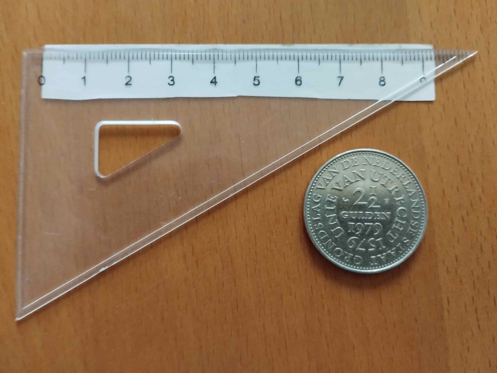

Once around 2018 I was wondering how to calculate the area of a circle.
I remembered the number 3.14 called the pi, but I was interested in the logic of comparing the circle to a square, because the square is the basis of area calculation. That is why we use square units.
The only problem with that was that the circle is not square. I have figured that the circle can be cut in four and then I get four right angles that can be aligned with the vertices of a square.
There was a different problem with that: The quadrant circles overlap at some places but the middle of the square is uncovered.
I was trying to match the overlapping area with the uncovered by eye.
When it looked quite close I did all kinds of complicated calculations.
I didn't have a routine in that and I wanted to calculate all aspects of it.
I calculated quite intensively and my calculations were quite extensive. When a backcheck resulted in an error I felt quite tired of it and just laid the figure face down.
About a month later I had a look at it and I realized at the first glimpse that the area of the circle equals the area of the square when the arcs of the quadrant circles intersect at the quarters of the centerlines.
Maybe that doesn't sound very scientific at first, but somehow I instantly realized that it is the only way.
Then I worked out the relationship between the radius and the side of the square algebraically via the Pythagorean theorem.
The result is that the area of a circle is exactly 3.2radius².
That got me excited for obvious reasons, but also confused. Nobody thought of that before? Why is the pi so different?
For about a year I kept thinking and calculating all aspects of that, and I shared my discovery just with a few friends. They didn't share my excitement.
Some of them didn't really care about math at all, those who did were sticking to the pi, just because it's an old and highly hyped convention.
Some claim to have verified the numeric value 3.14... with laser and atomic clock, in a large hadron collider, etc. They refer to things that a common person can't access, hence can't verify it. That smells fishy to me.
I have conducted experiments via common objects. Coins, beverage cans, a piece of paper and a ruler. These are relatively easy to find.

Coins and beverage cans are almost perfectly circular.
A beverage can can be cut and measured after straightening. We can't peel off the circumference of a coin. Rolling it along a ruler could be an option, but it's hard to avoid spinning and sliding, which would distort the result.
Paper is flexible enough to wrap around them, but strong enough not to stretch. The thickness of the paper can be added to the diameter of the coin. It can be unwrapped and measured after straightening with minimal distortion.
It doesn't matter if the ruler is not perfectly accurate, as long as its grading is consistent, and we're measuring the diameter of the object and the length of the paper with the same ruler, the results will be consistent.
At a circumference of 100 mm the difference between 3.2 and 3.14... is almost 2 mm. That is easy to see by naked eye.
The results of my measurements consistently showed that the circumference over the diameter equals 3.2; not 3.14...
These experiments are easily reproducible by almost anyone with minimal effort, yet accurate enough to see the difference between 3.2 and 3.14...
Meanwhile I figured that by extending the area of a circle to 3D, the volume of a sphere equals the cubed value of the square root of its cross-sectional area, just like a cube.
It's quite hard to physically accurately measure the volume of a ball, but there's a significant difference between the result of my V=(√(3.2)r)³ formula and the conventional " 4 / 3 × pi × r³ ".
I conducted some experiments with the resources that I had. I could not provide the accuracy that the subject deserves, but the results aligned better with my V=(√(3.2)r)³ formula.
The subject of the sphere experiment was a standard golf ball. That is not a perfect sphere because there are dimples on its surface. That can be compensated by calculating with a slightly shorter radius.
The measuring bottle had a nominal volume of 4 cl (40 ml ~ 4 / 3 US ounce). That is not perfectly precise either because the nominal volume indicates the guaranteed amount of the fluid in it in commerce. They come with an air gap atop the fluid so the total capacity of the bottle is somewhat larger.
The second sphere experiment was done with the same ball and a nominal 5 ml syringe. The nominal volume of a syringe should be its real volume. However, I have measured its length and width to make sure and I found that its real volume is about 10% larger. I took that into account in the calculations.
I have derived the volume of a cone by comparing a vertical quadrant of a cone to an octant of a sphere.
First I made a mistake in that. I knew that the height has to be divided by 2, not 3 as they usually do it, but I confused the vertical height with the slant height and I divided it by 2 only once, instead of twice. That resulted in a wrong numeric value. I have fixed that later.
In early 2020 there were news about that online education was introduced because of the pandemic.
I thought it was time to share my discoveries online, so I went to the local public library to publish them on a webpage. My volume formula for a cone and a pyramid was undeveloped and I didn't have much web development skills but I had to start somewhere. My attention was divided by lots of details in both geometry and IT.
I received some criticism regarding my formulas. Those included the lack of rigorous proof, and the alleged rigorous proofs of the conventional formulas.
Obviously I wasn't happy about those, but I felt like there's not much I can do about that. I derived my formulas from first principles, what should I prove about those?
Also I didn't see how the so-called "proofs" of the conventional formulas prove anything. They are superficial, exaggerated and nonsensical. Only I see that?
Then I realized that it is about something else. It's the old "We have a diploma, so we are right." thing.
I'm not buying that. I got thinking way before I started all this, who issued the first diploma in history?
That is something to think about for a moment.
Years have passed without significant development. I was working on improving my online presence and solved geometry puzzles on social media. You can find my favorites on X in the replies of @BasicGeometry. Solving puzzles is fun, and helps to learn and develop some routine.
Eventually I have realized that through my formulas I have created a logically interconnected, consistent geometric framework.
Something that the one would assume of the conventional geometry. There are several geometry concepts, but there's a popular one that they teach in schools and online.
That starts with that "a point is a zero-dimensional entity", "the line has no thickness" and states that "the ratio between the circumference and the diameter of a circle is pi", "the volume of a sphere is 4 / 3 × pi × r³", "the volume of a cone and a pyramid is base × height / 3", and all that is "rigorously proven via calculus".
They call that Euclidean geometry. I primarily regard my framework as a fix of the conventional one.
It's quite similar to the Euclidean, but apparently the key differences are that I don't define the point is as zero-dimensional and a line can have a thickness. These two make a big difference, especially in case of 3 dimensional solids.
Since conventional geometry is associated with the zero-dimensional point and Archimedes' flawed formulas, I figured that it's the best to start with a clear sheet.
Exactly determining the properties of different shapes is in the scope.
I named my framework the Core Geometric System ™ and put the trademark symbol on it to indicate that this not just another abstract geometric system.
The name reflects that my logic is built in accordance with the core principles of elementary mathematics. That is something that people assume of the conventional one and they have no idea how badly it deviated from that.
The expression was unique back then. I came up with it. I never read it anywhere else before. Back then I searched for it to find out if anyone else is using it, and there were no results for that term.
Interestingly, now language models explain it like some generic term without even referencing my work.
The trademark symbol indicates that it's not to be confused with some generic term. While it might be surprising in the 21st century, this is the first and only geometric system in accordance with the core principles of elementary mathematics.
Later that year I got access to AI language models.
That got things going. One generated me great figures, another one helped to develop the proof for my circle area formula, and they helped me to get my phrasing and the technical part of my website in shape.
They also helped to disprove the conventional formulas by summarizing their key points.
It wasn't easy because they acted just like the academic wise guys defending their diplomas, insisting that the conventional formulas are well-established and rigorously proven, and called my ones deviations.
It was very disturbing. But I was able to spot their recurring arguments. And I questioned them until they revealed all the inconsistent details they were trying to hide.
Those are the logical flaws in conventional geometry.
While trying to explain it to others, I have found that different people have different levels of education.
I thought I can't just start the explanation with the numbers and basic operations.
Then I realized that I can.
Of course that takes a lot of learning and exercise for the reader, but language models can help with that. The basic math section is therefore presented quite briefly.
It's not in the scope of this website to teach basic math, but with the help of a teacher or a language model one can learn the basics that are required for understanding basic geometry.
The basic math, my geometry, its proofs, and the analysis of the conventional formulas together form the Basic Geometry Curriculum.
If you are familiar with basic math, just skip to the geometry content.
Either way, expanding on the content with Copilot is fun.
The link to the homepage is at the bottom of this one.
Thank you for reading this and thanks to everyone making it possible.
® All rights reserved
2026